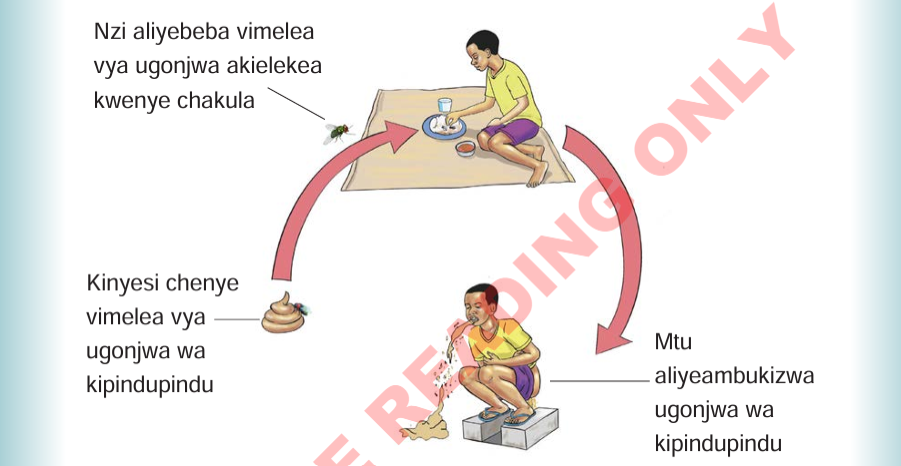

na nzi. Nzi anaweza kubeba vimelea kutoka kwenye matapishi au kinyesi chenye vimelea kwenda kwenye chakula au maji. Kielelezo namba 2 kinaonesha uenezwaji wa ugonjwa wa kipindupindu.

Nzi aliyebeba vimelea vya ugonjwa akielekea kwenye chakula Kinyesi chenye vimelea vya ugonjwa wa kipindupindu Mtu aliyeambukizwa ugonjwa wa kipindupindu Maelezo ya picha: Uenezaji wa kipindupindu: nzi hubeba vijidudu kutoka kwenye kinyesi na kuvileta kwenye chakula. Mtu akila chakula hicho huambukizwa na kuugua.Kielelezo namba 2: uenezwaji wa ugonjwa wa kipindupindu.
Dalili za kipindupindu
Zifuatazo ni dalili za ugonjwa wa kipindupindu:
(a)
Kuharisha na kutapika mfululizo;
(b)
Kutoa kinyesi chenye rangi kama ya maji yaliyosafishiwa mchele;
(c)
Mkojo kuwa na rangi ya manjano; na
(d)
Kulegea mwili na kuishiwa nguvu.
Namna ya kuzuia kipindupindu
Tunapaswa kuishi katika mazingira safi na kudumisha usafi. Tunashauriwa kula chakula na kunywa maji safi na salama. Aidha, ni muhimu kutumia choo wakati wa kujisaidia. Pia,